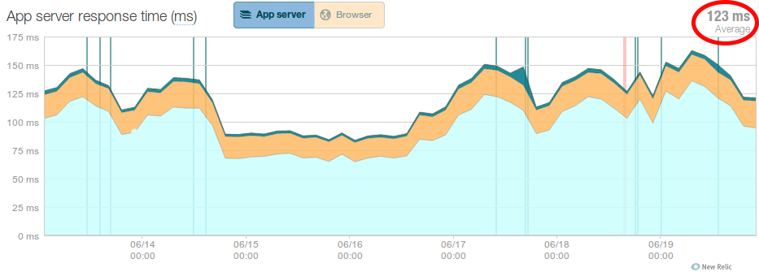

Interrupt-driven programming

Really?


123ms vs 139ms — Averages are misleading
Slow requests have a big impact
- Frustrate users, timeouts
- Break API clients
- Rants on Twitter
Fast requests do not, so forget averages, use 98 percentiles
and focus on the 2% instead.
Log timeouts
import signal
def handler(*args):
raise Exception("Request timed out")
signal.signal(signal.SIGALRM, handler)
class WsgiMiddleware(object):
def __init__(self, app):
self.app = app
def __call__(self, environ, start_response):
signal.setitimer(signal.ITIMER_REAL, 28)
try:
return self.app(environ, start_response)
finally:
signal.setitimer(signal.ITIMER_REAL, 0)
Full tracebacks of hotspots in Sentry.
Simple, just:
- Rewrite each hotspot to run in constant time
- Leads to predictable, bounded max runtime
- Fixed upper bound is your new 100 percentile
GET /api/1.0/repositories/m_eide/nav-maintenance-django/changesets
RequestTimeoutError
File "piston/resource.py", line 174, in checked_meth
return meth(*args, **kwargs)
File "piston/utils.py", line 153, in wrap
return f(self, request, *args, **kwargs)
File "bitbucket/apps/api/v10/handlers.py", line 3288, in read
history = list(repo.history)
File "orochi/hg.py", line 1188, in __len__
return len(self._repo)
File "mercurial/localrepo.py", line 239, in __len__
return len(self.changelog)
File "mercurial/scmutil.py", line 897, in __get__
entry.obj = self.func(obj)
File "mercurial/localrepo.py", line 197, in changelog
c = changelog.changelog(self.sopener)
File "mercurial/changelog.py", line 115, in __init__
revlog.revlog.__init__(self, opener, "00changelog.i")
File "mercurial/revlog.py", line 241, in __init__
i = f.read()
File "interruptingcow/__init__.py", line 56, in handler
raise exceptionEasier said than done
intermittent infrastructure issues
severe lock contention
unpredictable input (4GB blob)
problematic libraries (regex?)
Interruptingcow
$ python
> from interruptingcow import timeout
> with timeout(2, RuntimeError):
> while True:
> pass
Traceback (most recent call last):
File "", line 4, in
File ".../interruptingcow/__init__.py", line 56, in handler
raise exception
RuntimeError
from interruptingcow import timeout
class RequestTimeout(Exception): pass
class TimeboxedMiddleware(object):
def __init__(self, app):
self.app = app
@timeout(28, RequestTimeout)
def __call__(self, environ, start_response):
self.app(environ, start_response)
- Interrupt any code path by raising custom exceptions
scalable content linkification
def replace(doc, pattern, tmpl):
try:
m = pattern.search(doc)
if m is not None:
head = doc[:m.start()] + tmpl.format(m.groups())
tail = doc[m.end():]
return head + replace(tail, pattern, tmpl)
except TimeoutException:
pass
return doc
with timeout(.1, TimeoutException):
print replace(doc, re.compile(r'[\da-f]{7,40}'),
'{0}')
- Iteratively linkifies commit hashes until time runs out
- Safely runs user-provided patterns
django-timelimit
{% load timelimit %}
| {% trans "Author" %} | |||
|---|---|---|---|
| {{ commit.author }} | {{ commit.desc }} | {% timelimit quota %}{% diffstat commit %} | {% else %}diffstat not available | {% endtimelimit %}